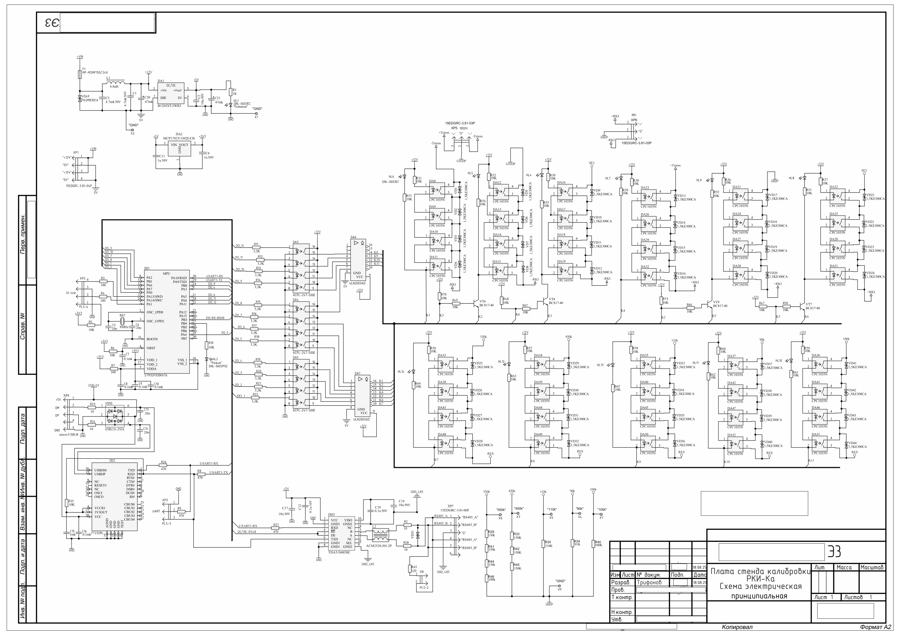
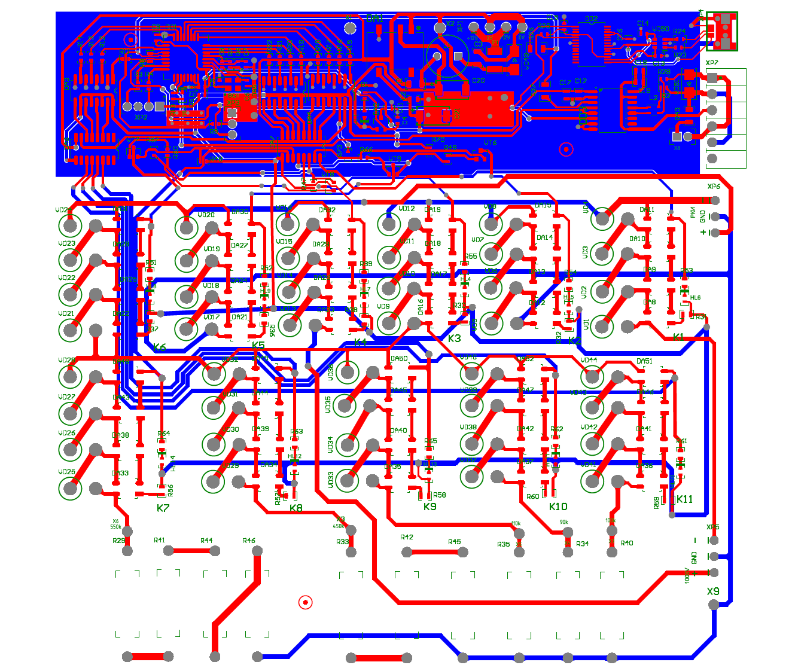
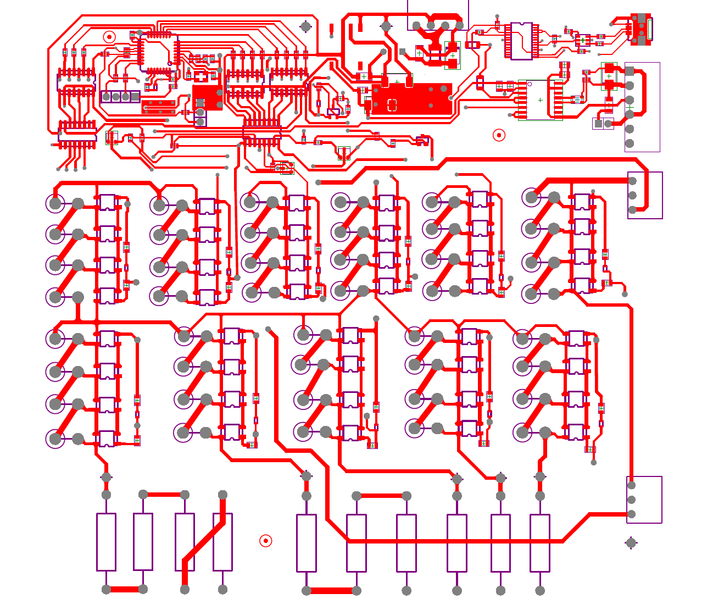
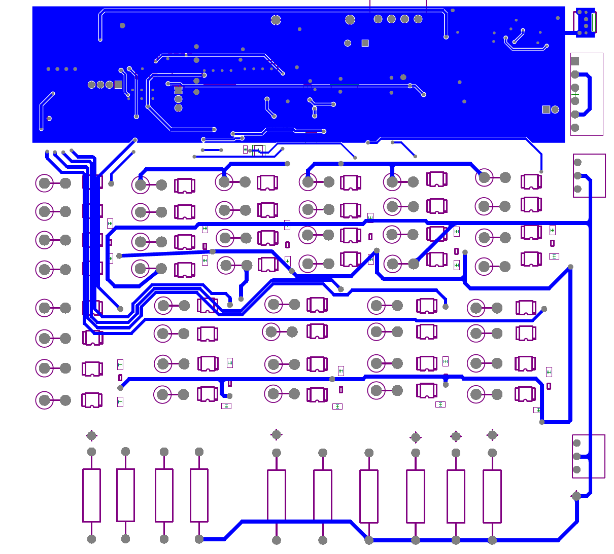

3D-модель платы стенда
👆 Вращайте мышкой, чтобы рассмотреть плату со всех сторон
О проекте
Автоматизированный стенд для калибровки модуля контроля изоляции (МКИ) под напряжением 1000 вольт. Проект полностью автоматизирует процесс высоковольтной калибровки, делая его безопасным и повторяемым.
Принцип работы
- ПК по COM-порту отправляет команду МКИ на вход в режим калибровки
- ПК сообщает плате стенда, какую нагрузку подключить (90кΩ, 100кΩ, 150кΩ, 300кΩ, 400кΩ, 500кΩ)
- Стенд коммутирует нужную нагрузку через релейную матрицу
- Выполняется калибровка под напряжением 1000В
- Результаты отправляются на ПК
🔬 Инженерные решения
- Гальваническая развязка по питанию (DC-DC изоляция)
- Развязка сигналов управления (оптроны / цифровые изоляторы)
- Высоковольтные зазоры и усиленная изоляция на PCB
- Релейная матрица для коммутации нагрузок 90-500 кОм
- Два независимых COM-порта: для МКИ и для стенда
- Для коммутации нагрузок вместо обычных реле используются оптореле CPC1035N
Результат
✅ Успешно внедрён
Стенд успешно эксплуатируется, позволив полностью автоматизировать и обезопасить процесс высоковольтной калибровки. Время калибровки сократилось в 5 раз, исключен человеческий фактор при работе с высоким напряжением.
Характеристики
- Микроконтроллер: STM32F030
- Интерфейс с ПК: Виртуальный COM-порт (USB CDC)
- Напряжение калибровки: 1000V DC
- Набор нагрузок: 90кΩ, 100кΩ, 150кΩ, 300кΩ, 400кΩ, 500кΩ
- Коммутация: Релейная матрица
- Гальваническая развязка: Питание + сигналы
- Тип развязки: DC-DC преобразователь + оптроны
- Питание низковольтной части: 5V USB
- Размер платы: 120mm × 100mm
- Количество слоев: 2
Технологии
⚡ Высоковольтные нагрузки:
Все резисторы рассчитаны на работу под напряжением 1000В
Архитектура системы
ПК
Python GUI
Стенд МКИ-Ка
STM32F030
Высоковольтная часть
1000V нагрузки
ПК управляет двумя устройствами через независимые виртуальные COM-порты
Гальваническая развязка
5V
Низковольтная сторона
90-500 кОм
Высоковольтная сторона
Типы развязки:
- По питанию: изолированный DC-DC преобразователь
- По сигналам: оптроны / цифровые изоляторы с усиленной изоляцией
- Топология PCB: увеличенные зазоры (creepage/clearance) для 1000В
Проектирование в Altium Designer



